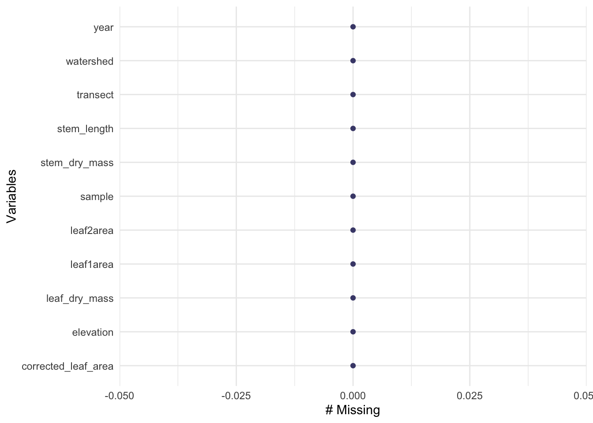
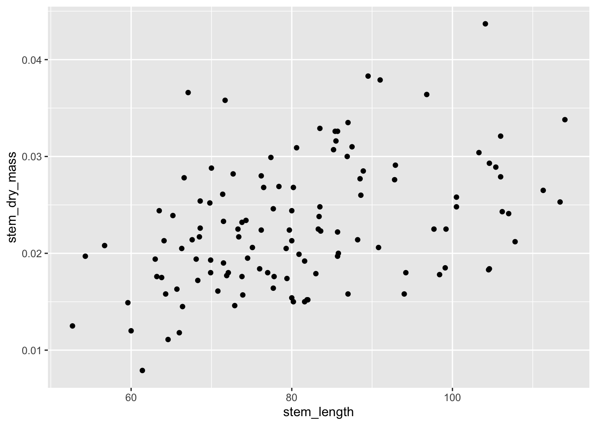
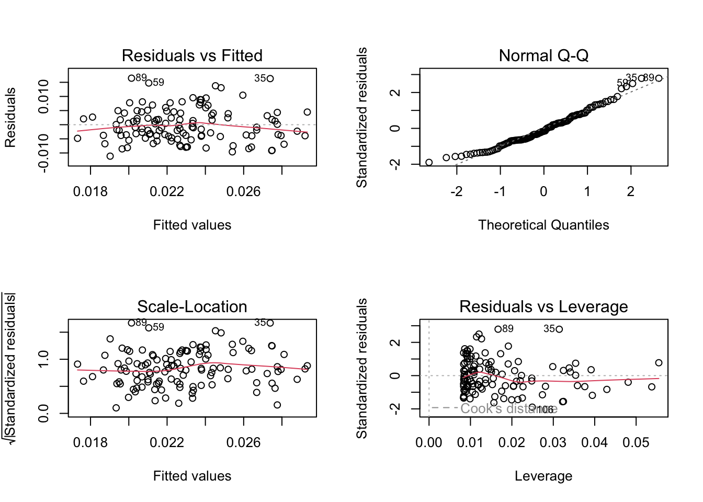
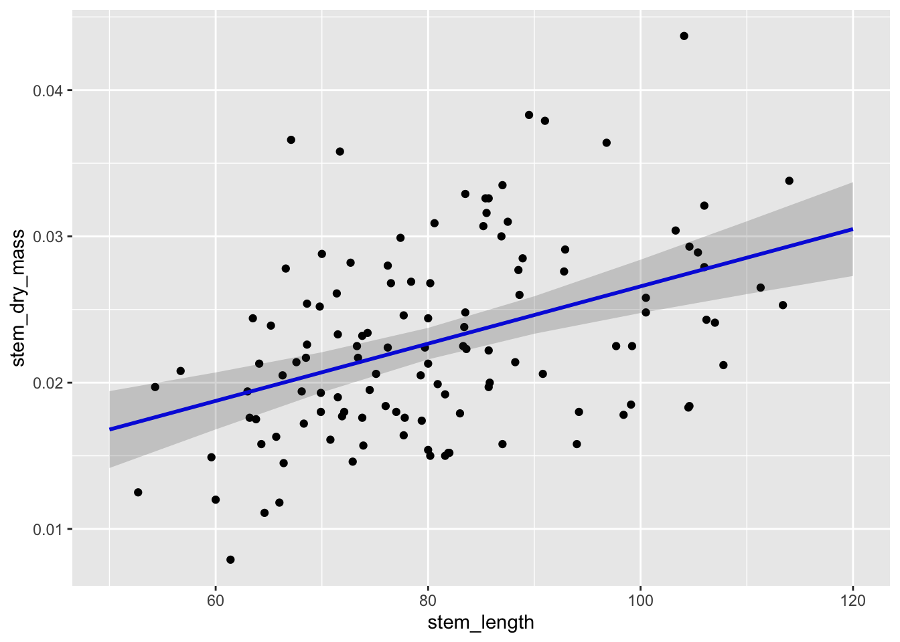

install.packages("performance")
install.packages("broom")
install.packages("flextable")
install.packages("ggeffects")
install.packages("car")ENVS 193DS week 7 coding workshop
library(tidyverse)
library(here)
library(lterdatasampler)
library(naniar)library(performance)
library(broom)
library(flextable)
library(ggeffects)
library(car)linear models
how does the stem length predict stem dry mass
maples_data <- hbr_maples %>%
filter(year == 2003 & watershed == "Reference")Visualizing missing data
gg_miss_var(maples_data)
Create an exploratory data visualization:
ggplot(data = maples_data, aes(x = stem_length, y = stem_dry_mass)) + geom_point()
let’s try a model
maples_model <- lm(stem_dry_mass ~ stem_length, data = maples_data)
maples_model
Call:
lm(formula = stem_dry_mass ~ stem_length, data = maples_data)
Coefficients:
(Intercept) stem_length
0.0070033 0.0001958 Check assumptions
- linear relationship between variables: yes (used the exploratory data visualization to check that)
- independence of errors: yes (making that assumption based on how the data were collected)
- homoskedasticity of errors: yes (making that decision from residuals vs. fitted plot/scale-location plots)
- normally distributed errors: yes (looking at QQ plot of residuals)
par(mfrow = c(2, 2))
plot(maples_model)
turn off 2x2 grid:
dev.off()putting things together to communicate
model predictions
predictions <- ggpredict(maples_model, terms = "stem_length")plot predictions:
plot_predictions <- ggplot(data = maples_data, aes(x = stem_length, y = stem_dry_mass)) +
# first plot the underlying data
geom_point() +
geom_line(data = predictions, aes(x = x, y = predicted), color = "blue", linewidth = 1) +
# plot the confidence interval around model estimates
geom_ribbon(data = predictions, aes(x = x, y = predicted, ymin = conf.low, ymax = conf.high), alpha = 0.2)
plot_predictions
create tables
model_summary <- summary(maples_model)
model_squares <- anova(maples_model)
model_summary
Call:
lm(formula = stem_dry_mass ~ stem_length, data = maples_data)
Residuals:
Min 1Q Median 3Q Max
-0.0111253 -0.0039117 -0.0009091 0.0040911 0.0164587
Coefficients:
Estimate Std. Error t value Pr(>|t|)
(Intercept) 7.003e-03 3.212e-03 2.180 0.0312 *
stem_length 1.958e-04 3.909e-05 5.009 1.94e-06 ***
---
Signif. codes: 0 '***' 0.001 '**' 0.01 '*' 0.05 '.' 0.1 ' ' 1
Residual standard error: 0.005944 on 118 degrees of freedom
Multiple R-squared: 0.1753, Adjusted R-squared: 0.1683
F-statistic: 25.09 on 1 and 118 DF, p-value: 1.94e-06making a table
model_squares_table <- tidy(model_squares) %>%
mutate(p.value = case_when(
p.value < 0.001 ~ "<0.001"
)) %>%
flextable() %>%
set_header_labels(df = "Degrees of Freedom",
sumsq = "sum of squares")
model_squares_tableterm | Degrees of Freedom | sum of squares | meansq | statistic | p.value |
|---|---|---|---|---|---|
stem_length | 1 | 0.0008864214 | 0.00088642137 | 25.08876 | <0.001 |
Residuals | 118 | 0.0041691066 | 0.00003533141 |